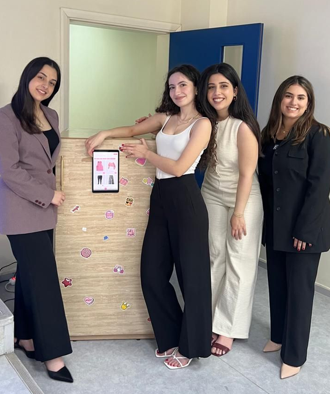

The idea
What if your closet actually knew what was inside it?
SmartCloset is a connected wardrobe that lets users digitize their clothes, organize their closet, track what they wear and receive outfit suggestions depending on their style, season and occasion.
We wanted to go beyond a purely digital wardrobe, so we also connected the application to the physical closet through Arduino-based IoT automation.

The experience
One wardrobe, from the closet door to the phone.
| Feature | What it does |
|---|---|
| Digital Closet | Add and organize clothes directly from the mobile application. |
| AI Clothing Detection | Automatically remove the background and detect clothing information from uploaded images. |
| Outfit Suggestions | Recommend outfits according to style, season and occasion. |
| Wardrobe History | Track clothing usage and previous outfits through a visual calendar. |
| Connected Closet | Detect closet-door activity, trigger LED feedback and automatically capture clothing photos. |
01 — Mobile App
Building the interface around the wardrobe.
My main responsibility was developing the Android application in Kotlin with Jetpack Compose.
I implemented the main user flows around the digital wardrobe: adding clothes, browsing the closet, displaying recommendations, viewing outfit history and connecting the different services behind the application.

02 — Backend & Integration
Connecting the pieces behind the interface.
I also worked on the backend and end-to-end integration of the system, using Supabase for the application's cloud services and connecting the mobile experience to the AI services.
When a user adds a garment, the image can pass through the AI pipeline before the processed information is returned to the application and stored as part of the user's digital wardrobe.
| Layer | Role |
|---|---|
| Android App | Kotlin + Jetpack Compose user experience |
| Supabase | Cloud data and application services |
| FastAPI | Expose the AI models to the application |
| Arduino | Connect the physical wardrobe to the digital system |
03 — AI Integration
Bringing my teammates' models into the app.
The machine-learning models were developed by my teammates Marilyn Abou Tayeh, Lea Chamseddine and Fatima AlRabih.
Their work covered background removal, clothing detection and intelligent outfit recommendations. My role was to integrate these models into the application and backend so that they became part of the actual user experience.
This meant turning separate AI components into a complete flow: from a photo taken or uploaded by the user, through processing, to information that could actually be displayed and used inside SmartCloset.
04 — IoT
Connecting the app to a real closet.
The part that made SmartCloset more than a mobile application was the physical wardrobe itself.
I implemented the Arduino-based IoT automation used to detect interactions with the closet door and trigger real-time actions such as LED feedback and automatic photo capture.
My contribution
Making the whole system work together.
SmartCloset was very much a team project, but my work focused on the parts that connected the system together.
- Developed the Android mobile application in Kotlin
- Built and connected the backend services
- Integrated the team's AI models into the application flow
- Implemented the Arduino-based IoT automation
- Connected the physical wardrobe with the digital experience